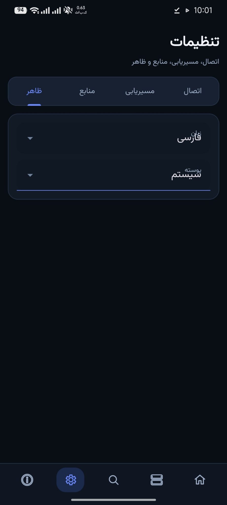
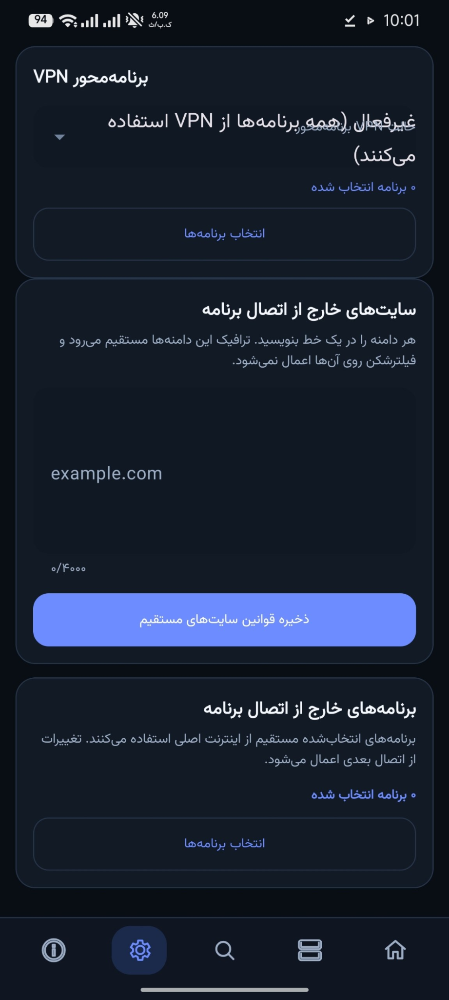

اسکنر مرحلهای
پیشرفت دریافت کانفیگ و آزمایش سرورها جداست؛ لاگ زنده با برجستهسازی وضعیتها نمایش داده میشود.
اسکن، ارزیابی و اتصال چندسکویی با Xray، Aether و WARP؛ رابط فارسی/انگلیسی برای Windows، Linux، macOS و Android.
پیشرفت دریافت کانفیگ و آزمایش سرورها جداست؛ لاگ زنده با برجستهسازی وضعیتها نمایش داده میشود.
تنظیمات برنامهمحور یکپارچه، dropdown بدون همپوشانی عنوان و badgeهای مستقل کیفیت، نوع و حجم.
python tools/verify_version.py
python -m pytest -q

کد منبع و Releaseها در مخزن GitHub پروژه منتشر میشوند.